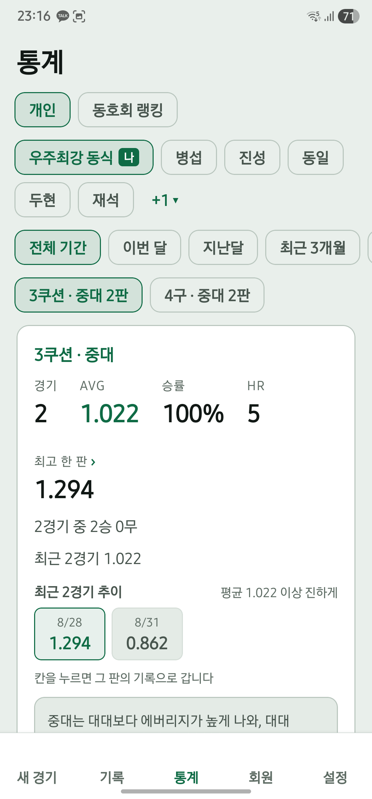

이겼는지뿐 아니라 어떻게 쳤는지도 남겨보세요. 한 판의 결과를 보고, 같은 조건의 기록을 쌓아가면 내 경기 흐름을 돌아보기 좋습니다.
당구 에버리지(애버리지)는 어떻게 계산하나요?
3쿠션 에버리지는 득점을 이닝으로 나눈 값입니다. 같은 점수라도 더 적은 이닝에 기록했다면 에버리지가 높아집니다. 이닝은 그 사람이 큐를 잡은 횟수이고, 목표점을 채운 마지막 이닝도 포함합니다.
여러 경기는 합계로 계산해요.
경기별 에버리지를 단순히 평균 내지 않습니다. 같은 조건의 경기에서 총득점 ÷ 에버리지 계산에 사용하는 총이닝으로 계산합니다.
| 경기 | 득점 | 이닝 | 에버리지 |
|---|---|---|---|
| 첫 번째 경기 | 20 | 40 | 0.500 |
| 두 번째 경기 | 20 | 20 | 1.000 |
| 합산 | 40 | 60 | 0.667 |
같은 조건끼리, 같은 기준으로.
에버보드는 종목, 대대·중대와 뱅크샷 점수 규칙을 구분해 통계를 모읍니다. 다른 조건의 숫자를 섞지 않고, 같은 조건에서 변화를 확인해 보세요.
AVG · 에버리지
이닝당 득점을 확인합니다. 한 경기의 수치뿐 아니라 여러 경기의 흐름을 함께 살펴보세요.
HR · 하이런
한 차례에 이어서 낸 가장 높은 득점입니다. 4구는 개수로 표시합니다.
이닝별 득점 격자
어느 이닝에서 득점했는지 되짚어봅니다. 통계의 경기별 추이에서 해당 경기 기록으로 들어갈 수 있습니다.
혼자 연습한 기록은 에버리지에 포함되지만 승률 계산에서는 제외됩니다.

상대 전적과 모임 성적표 활용하기
- 같이 치는 사람을 회원으로 등록하세요.
다음 경기에서도 같은 회원을 선택하면 사람별 기록을 이어서 볼 수 있습니다.
- 상대 전적으로 함께 친 결과를 확인하세요.
통계에서 상대와의 전적을 살펴보세요. 상대 전적은 무료 기능입니다.
- 모임 성적표를 글로 나누세요.
기록 탭의 모임에서 성적표를 누르면 순위와 승수, 에버리지, 하이런이 글로 정리되어 단톡방에 바로 올릴 수 있습니다.
- 한 판의 결과는 이미지로 나누세요.
기록에서 경기를 열면 그 판의 결과를 이미지 카드로 공유할 수 있습니다.
기록이 쌓이면 볼 수 있는 것들
최근 폼과 핸디 제안은 무료입니다. 핸디 제안은 충분한 경기 기록을 바탕으로 제공되며, 모임에서 다음 목표를 정할 때 참고할 수 있습니다.
최근 20경기 기록 열람은 무료이고, 그보다 오래된 기록 열람은 ‘전체 기록 잠금 해제’에 포함됩니다. 무료 열람 범위를 넘었다고 지난 기록이 삭제되지는 않습니다.
공타 상세와 기간별 통계, 경기별 추이 확장, 동호회 랭킹 전체 등은 ‘전체 기록 잠금 해제’에 포함됩니다. 공타 분석의 치는 유형은 종목·대대/중대별 개인전 기록이 200이닝 이상이고 득점한 이닝이 있어야 표시됩니다.
무료·유료 범위와 자주 묻는 질문